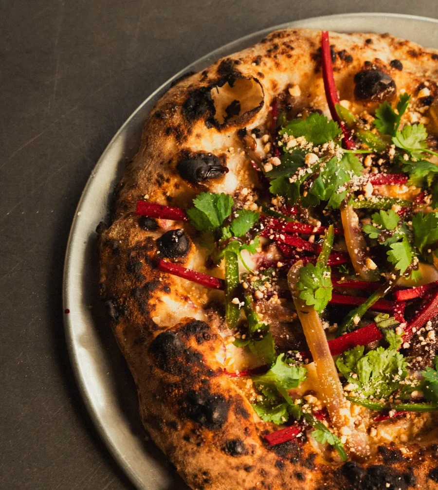
HuisfavorietConfinatra
Eend, mozzarella, gepekelde groenten, koriander, hoisin en pinda.
Ons deeg rijst drie dagen voor het de oven in gaat. Daarna gaat het snel: 360 graden, een luchtige korst vol bubbels en toppings die met de seizoenen meedraaien. Schuif aan de toog en kijk mee.
Donderdag tot zondag, vanaf 17u
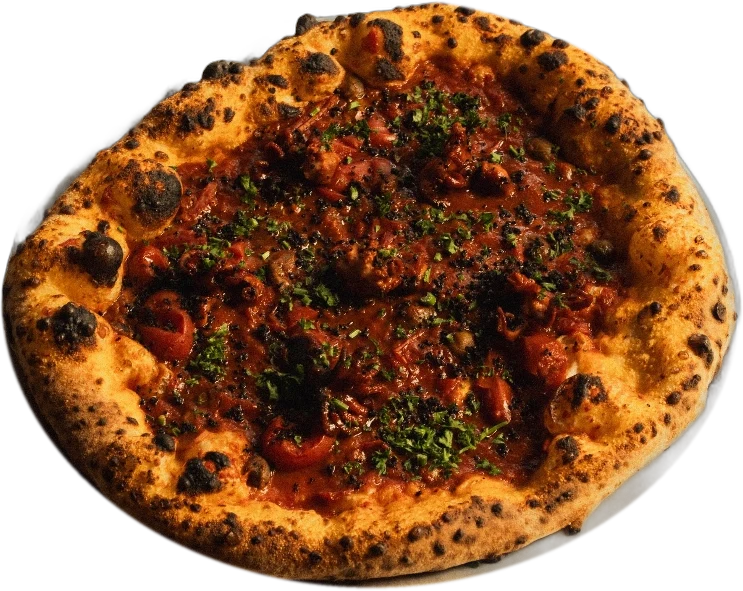
De kaart volgt het seizoen, dus wat je vandaag eet, staat er volgende maand misschien niet meer op. Een paar pizza's die we met trots uit de oven haalden:

HuisfavorietEend, mozzarella, gepekelde groenten, koriander, hoisin en pinda.
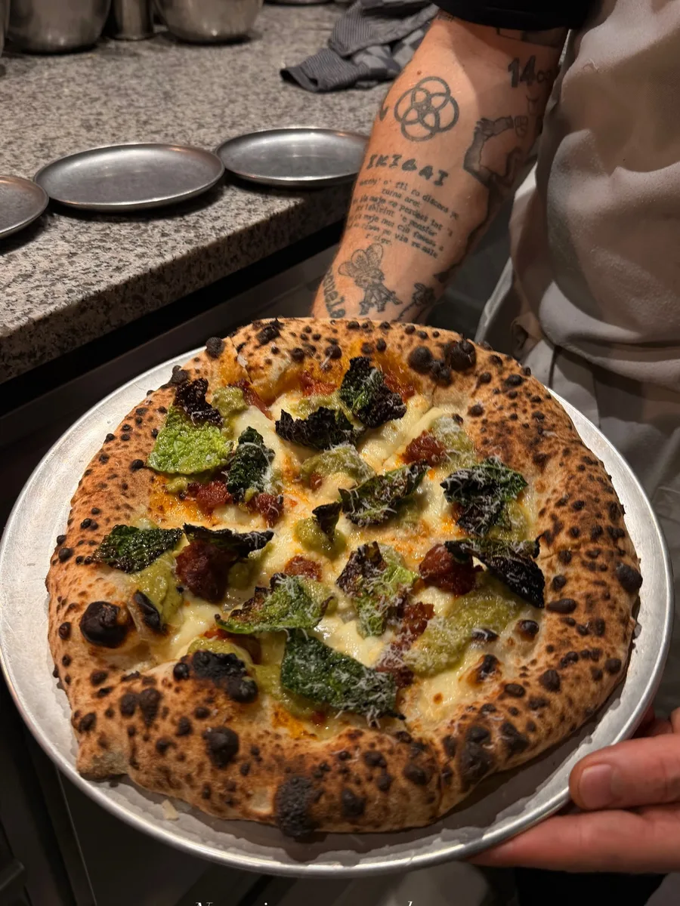
Vuur en rookChorizo ibérico, gerookte provola, salsa verde en geroosterde boerenkool.
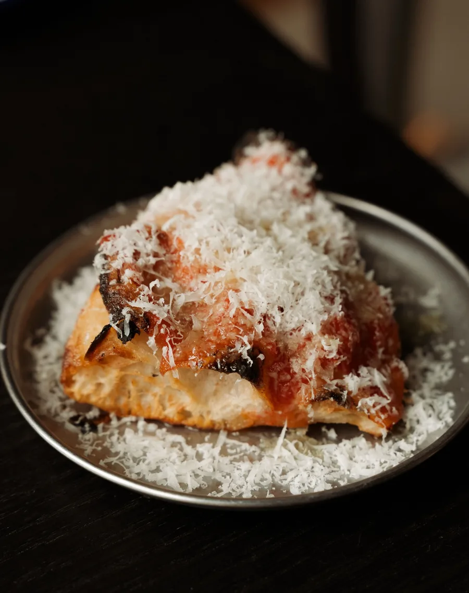
GefrituurdDubbel gebakken deeg, San Marzano, Parmigiano Vacca Bruna 60 maanden en pecorino.
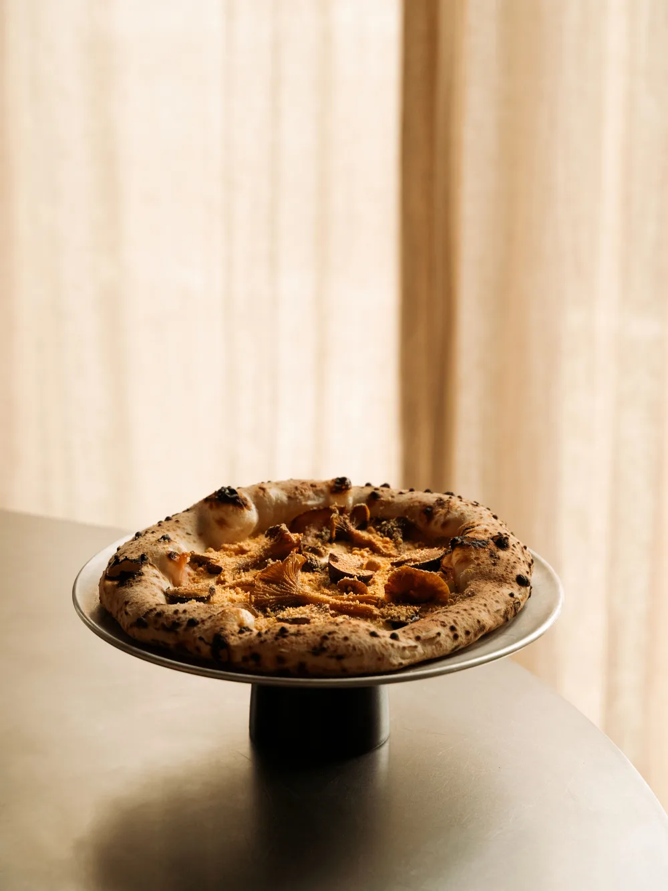
HerfstTerug van weggeweest, samen met de paddenstoelen van het seizoen.
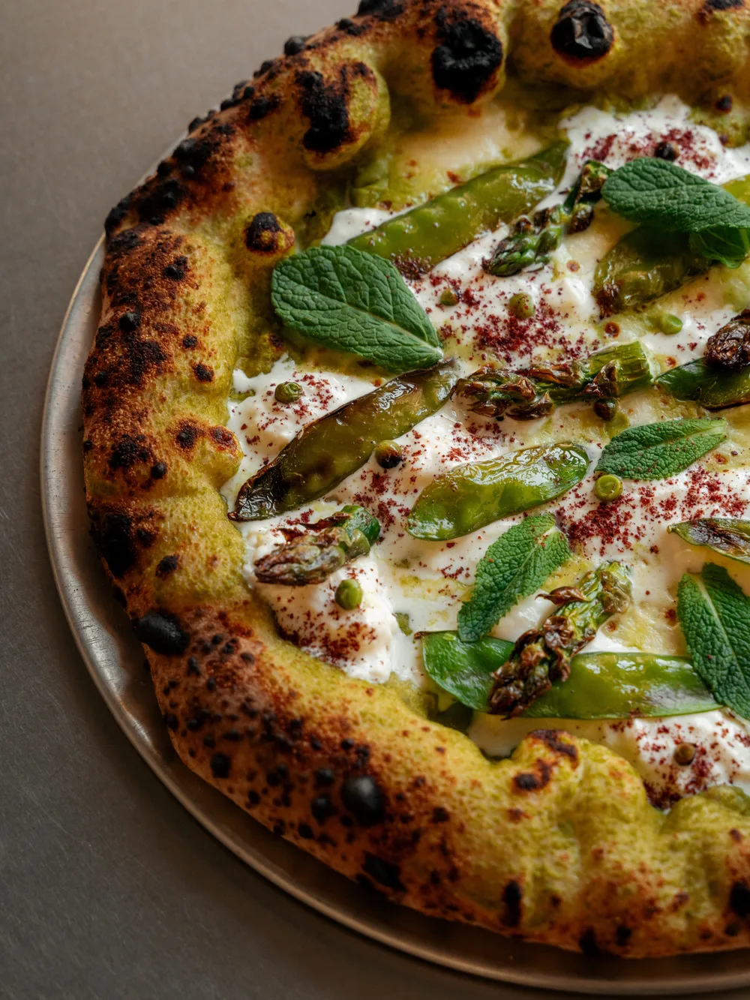
VoorjaarErwten, asperges, peultjes, stracciatella, munt en sumak. Juni op een pizza.
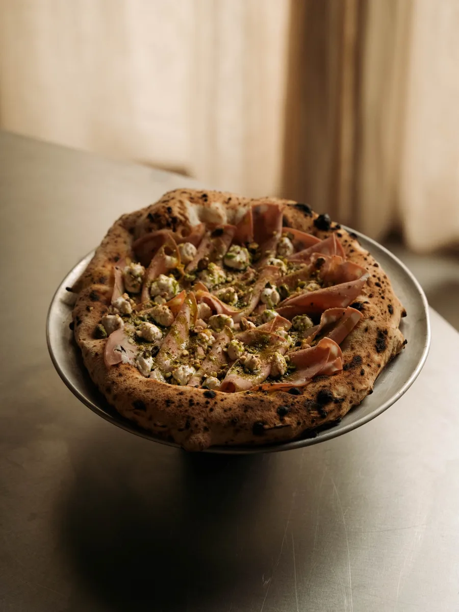
KlassiekerSimpel en tijdloos. Zo vierden we World Pizza Day.
Goed om te weten: op tafel ligt een schaar. Knip je pizza zelf in punten, zoals in Napels.
Reserveer je tafel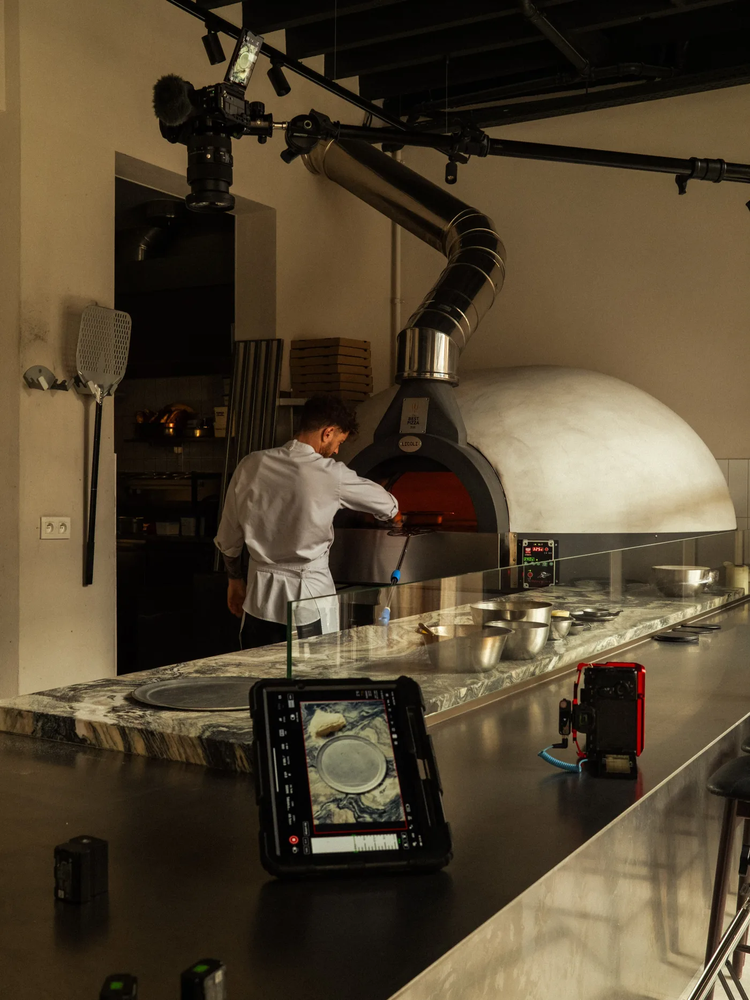
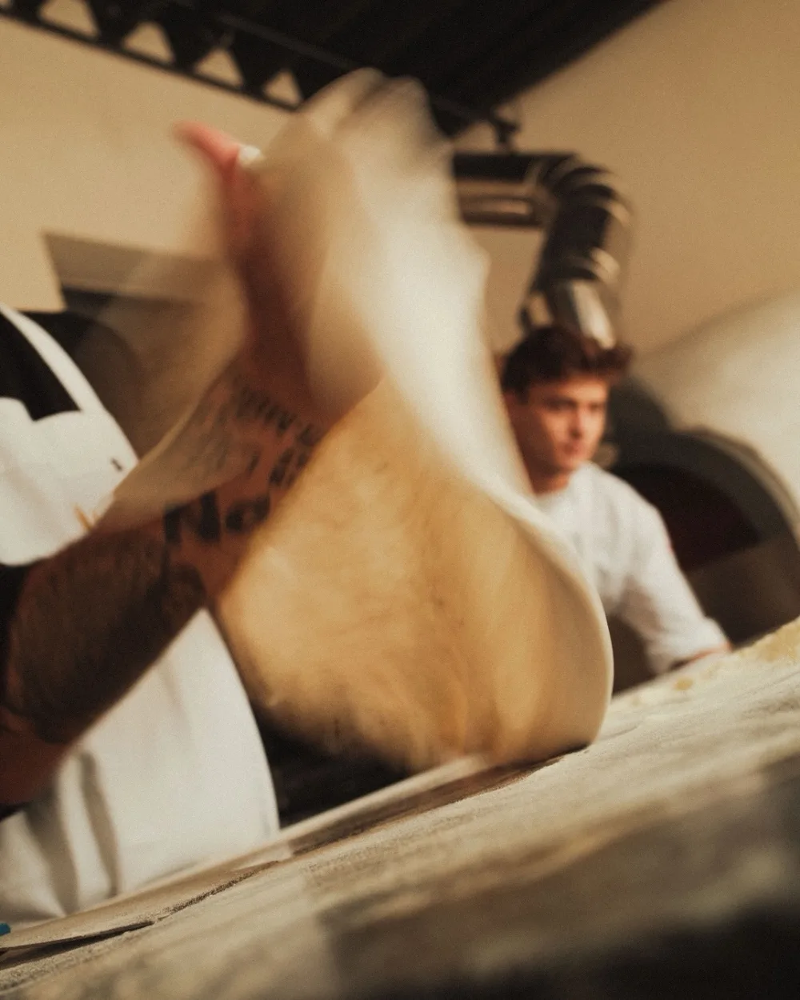
Bij Licoli zit je niet ver weg van de keuken. Onze V-vormige toog loopt rond de oven, zodat je ziet hoe elk deegbolletje uitgerekt, belegd en gebakken wordt.
Aan de oven staat Luca Fabozzi, eigenaar en pizzaiolo. Hij leerde het vak aan de Neapolitan Pizza Academy en werkt al meer dan tien jaar aan het zuurdesem waar alles hier mee begint.
Met twee? Vraag een plek aan de toog, daar zit je recht voor de oven.
Zin in iets bijzonders, of liever pizza in de zetel? Allebei kan.
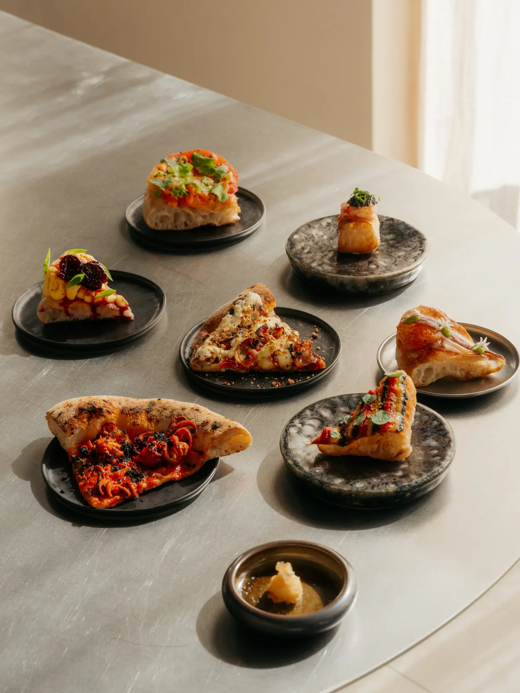
Een menu rond ons levend zuurdesem. Elke gang is een punt pizza met een eigen verhaal, technieken en smaken uit keukens van over de hele wereld. Geserveerd aan de toog, dicht bij de oven.
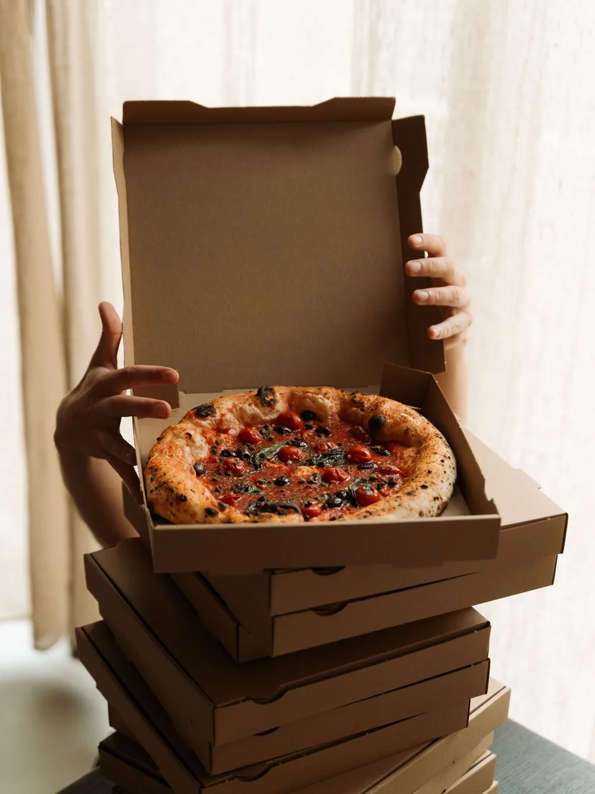
Op donderdag en zondag staan al onze klassiekers klaar om mee te nemen. Zonder app of tussenpersoon: je bestelt rechtstreeks bij ons. En wil je zelf aan de slag, dan vind je ons deeg en onze producten in de webshop.
Ook in de shop: het "Say no to pineapple on pizza"-shirt. We menen het.
Een greep uit de reviews op Google.
★★★★★"Wat een heerlijk concept! Gezellige setting, zicht op het maken van de pizza's. Extreem vriendelijke bediening (echt, waauw)."
★★★★★"Het eten en de ontvangst is fenomenaal! Je komt hier voor het authentieke, voor het product en voor de Italiaanse gastvrijheid."
★★★★★"Buonissima! Leuk om te zitten aan de bar rondom de keuken met zicht op de pizza oven."
Je vindt ons in de Generaal Lemanstraat, tussen het Zuid en Berchem. Reserveren is de beste keuze. Kom je met zes of meer, stuur ons dan ook even een mailtje.
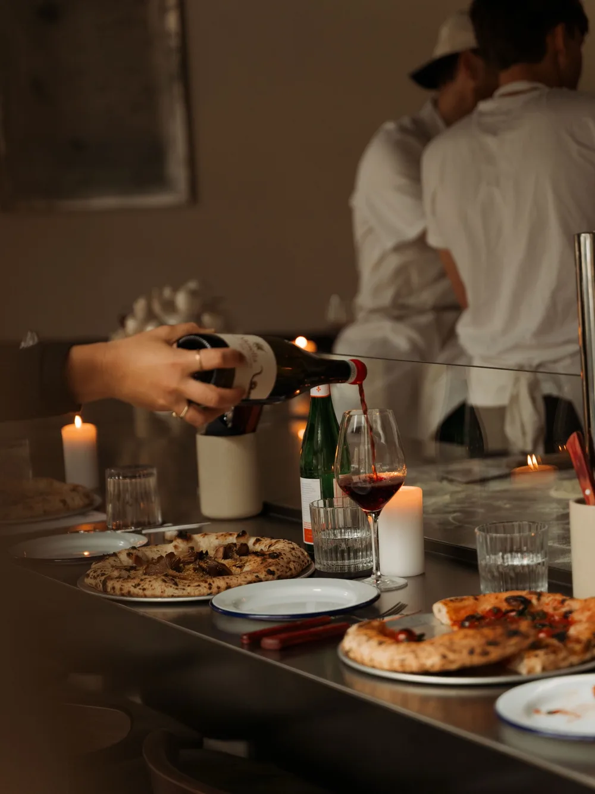
Aan de toog, bij kaarslichtIk maakte deze demo voor jullie om te tonen wat er kan. Na een kort gesprek maak ik er iets veel persoonlijkers van, helemaal naar jullie wens.
Vrijblijvend. Ik kom langs of we bellen.
Op maat, op jullie eigen domein.
Geen voorschot. Jullie betalen pas als alles klaar is.
Hosting, domeinnaam en kleine wijzigingen, zoals nieuwe openingsuren.
Omdat een voorbeeld meer zegt dan een mail. Zo zien jullie meteen wat er kan, en het kost jullie niets.
Nee. Het gesprek is vrijblijvend. Vinden jullie het niks, dan is het daarmee gedaan.
Na ons gesprek staat jullie site binnen 10 tot 14 dagen online.
Zeker. Jullie domeinnaam kan gewoon blijven, de nieuwe site komt in de plaats van de oude.
Nee, dat doe ik op basis van ons gesprek. Eigen foto's zijn mooi meegenomen, maar niet nodig om te starten.